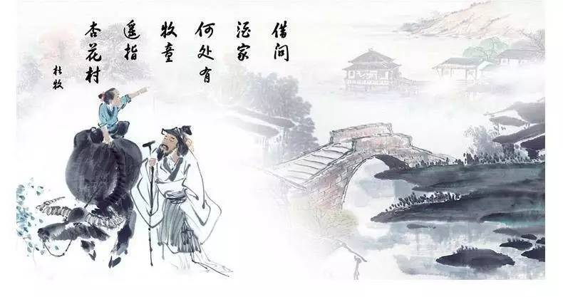
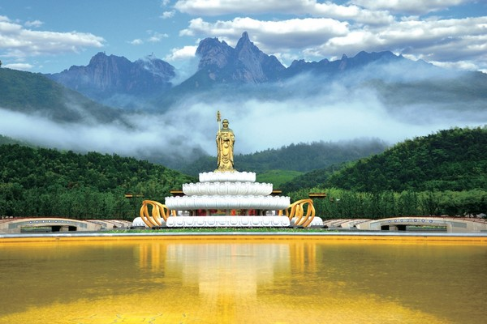
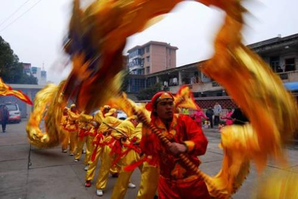

搜索
池州地处吴头楚尾，南北要冲，是一方古老而神奇的热土。它东邻金陵，西眺匡庐，北滨长江，南接徽杭。八百里皖江回旋激荡，数千年文脉绵延承传，吴侬软语、三楚情思、中原雄风在这里融汇流转，儒家文化、道家文化、佛家文化荟萃交融。独特的地理位置，久远的文明历史，形成了池州深厚而独具风韵的地域文化。
池州的灵山秀水，哺育了池州隽永灵秀的诗文化。“相逢桥上无非客，行尽江南都是诗”（萨都剌《重过九华山》），池州素有“千载诗人地”的美誉。唐代大诗人李白三上九华、五游秋浦，写下了数十首赞美池州山水的不朽诗篇；晚唐诗人杜牧在任池州刺史时写下的《清明》诗，被后人称作千古绝唱，也使池州杏花村名播青史、蜚声中外；陶渊明、白居易、苏轼、王安石、包拯、文天祥、岳飞、朱熹、陆游、李清照等许多文人雅士也曾徜徉在池州山水之间，留下了数千首脍炙人口的诗作。中国现存最早的一部诗文总集《昭明文选》，就是梁昭明 太子萧统奉命召集翰林学士，在池编辑并刻版印刷的。
以地藏精神为内核的九华山佛教文化个 性突出，地域性强。作为国际性佛教道场，九华山既是中国四大佛教名山，又是国家首批5A级风景名胜。千百年来，古刹林立，飞阁流丹，香烟缭绕，修持佛法，享有“莲花佛国”之称。九华山具有一千六百多年的佛教历史，灵山与圣地、自然和人文相互交融，佛、儒、道高度融合，宗教习俗与民间风俗和谐共生。地藏信仰是九华山佛文化形成之源，“众生度尽，方证菩提；地狱未空，誓不成佛”，地藏信仰从古印度传到中国，从佛经中菩萨到真人金地藏，在九华山这块净土上弘扬和辐射，最终形成了理念高尚、个性突出和系统完整的九华山佛教文化。
池州戏曲文化古朴、完整，地位突出。池州是中国傩戏之乡，被誉为“戏曲活化石”的池州傩戏、“徽池雅调”青阳腔名列国家级非物质文化遗产，称为“中国戏曲的百科全书” 石台目连戏和黄梅戏姐妹腔的文南词名列省级文化遗产。纯朴的民风、山区相对封闭和安逸的自然环境，使得池州古戏曲至今仍呈现原生态、古朴、粗犷的风格，内涵十分丰富，有着极高的文化人类学、戏剧学、宗教学、美术学、考古学和民俗学价值。池州还是安徽地方戏曲黄梅戏的重要流行区，有着广泛的群众基础。六七十年代巅峰时有业余剧团400多个，演职员6000余人，各市、县都有专业黄梅戏剧团，成为人民群众精神文化生活的重要载体，为黄梅戏的发展做出了积极贡献。
池州民俗文化丰富多彩。“五里不同风，十里不同俗”，独特的地理位置、多元文化的交融汇聚，形成了池州风格迥异的民俗文化。东至花灯、九华山庙会列入国家级非物质文化遗产，贵池罗城民歌、石台唱曲、平安草龙灯、鸡公调、福主庙会、酉华唱经锣鼓列入省级文化遗产。池州的民俗文化，几乎涵盖了民间百姓生产、生活、节庆娱乐的方方面面。正如国学大师钱穆所言：“风俗为文化奠深基，苟非能形成为风俗，则文化理想仅如空中楼阁，终将烟消云散。”池州风情各异而又丰富多彩的民俗文化，彰显了池州文化底蕴深厚、源远流长的文化特色。
